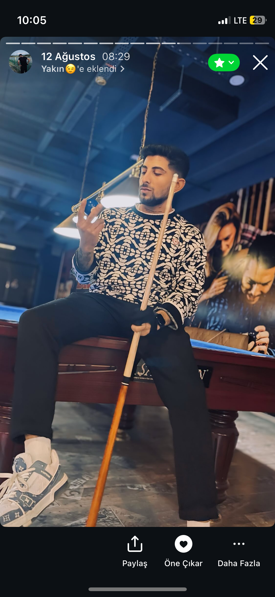
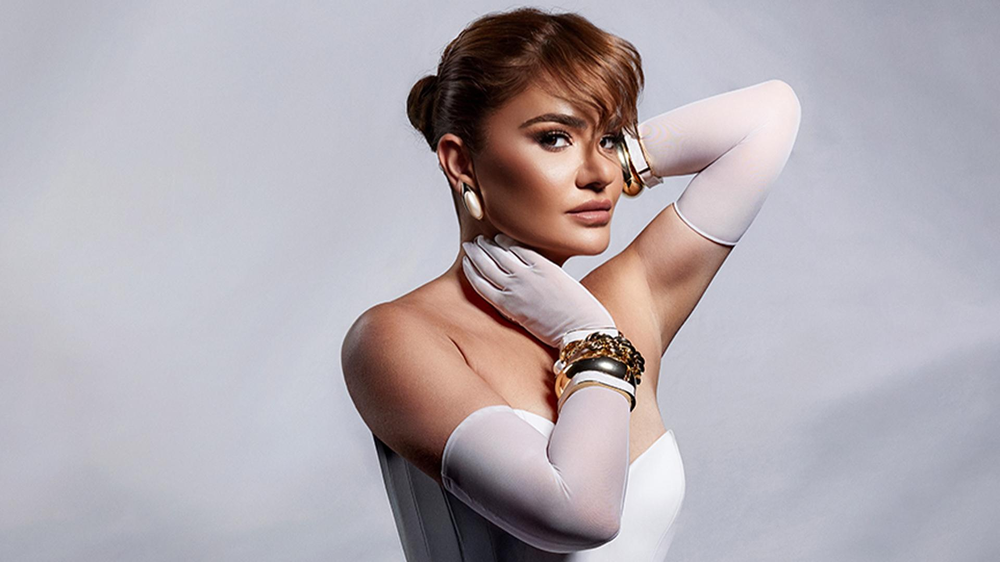
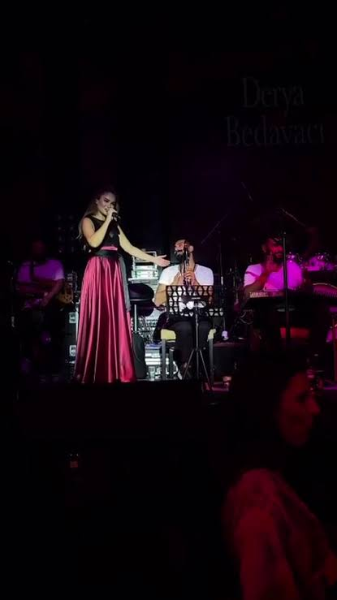
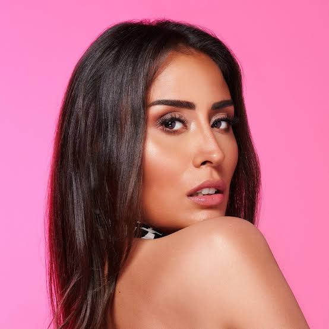
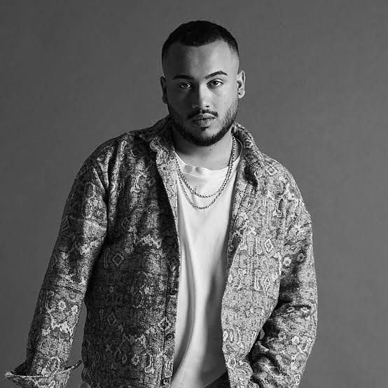

Müzisyenlerin yakından tanıdığı Engin Savcu, bir kararla tüm dijital izlerini sildirdi. 15 yaşında başladığı kariyerini mahkeme kararıyla noktalayan isim, resmî veritabanlarından çekildi.


Müzisyenlerin yakından tanıdığı Engin Savcu, bir kararla tüm dijital izlerini sildirdi. 15 yaşında başladığı kariyerini mahkeme kararıyla noktalayan isim, resmî veritabanlarından çekildi.

Zeynep Bastık
Derya Bedavacı
Hande Ünsal
TekirSavcu’nun profesyonel geçmişi Türkiye müzik piyasasının kayıt süreçleriyle paralellik gösteriyor.